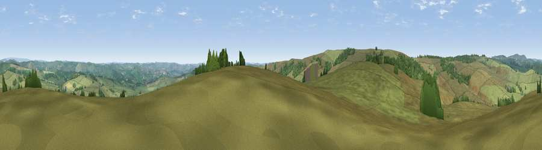

Viewpoint near Newtown
#21918 in England · top 35% of its area beats it · near Newtown · open accessWhere it is
The exact computed spot (SK 05275 62475). Click the marker for map links.
Public access: this spot lies on mapped open-access land (CRoW Act 2000) — you may roam here on foot. Computed from Natural England's CRoW access layer and OpenStreetMap rights of way — not the legal definitive map. Always verify locally.
The view, rendered

A 360° render of this exact spot computed from the terrain model, tree cover and land cover — summer colours, afternoon light, calibrated against photographs of famous viewpoints. Real trees, hedges and buildings will differ in detail.
The panorama
Grey silhouette: terrain skyline in each direction (720 bearings, Earth curvature and refraction included). Dashed green: skyline with trees (+15 m) and buildings (+8 m) as obstacles. Blue strip: how far the ground is visible on each bearing.
Where the view opens
Wedge length = distance to the farthest visible ground on that bearing (vegetation-aware). Rings at 10, 25 and 50 km.
What fills the view
91% grassland · 8% woodland
Angular shares of the visible panorama (visual magnitude), not map area. Landscape diversity 0.14 (0–1 Shannon).
Key numbers
More beautiful places nearby
The staircase of upgrades: each row has a higher view potential than everything closer. Driving times are estimates from straight-line distance, calibrated against real road routing — check an actual route before setting out.
| Place | Direction | Drive | Score |
|---|---|---|---|
| Viewpoint near Newtown | S · 2 km | ~6 min | 53.1 |
| Viewpoint near Thorncliffe | SW · 4 km | ~9 min | 66.5 |
| Viewpoint near Meerbrook | W · 5 km | ~11 min | 72.1 |
| Viewpoint near Meerbrook | W · 5 km | ~11 min | 73.2 |
| Viewpoint near Meerbrook | WNW · 5 km | ~12 min | 73.5 |
| Tissington Hill | SE · 14 km | ~25 min | 75.5 |
| Viewpoint near Mow Cop | WSW · 20 km | ~34 min | 78.9 |
| Viewpoint near Mow Cop | WSW · 20 km | ~34 min | 80.2 |
53.15938, -1.92256 · source: screening · position refined by local search. Computed location — check access rights before visiting.